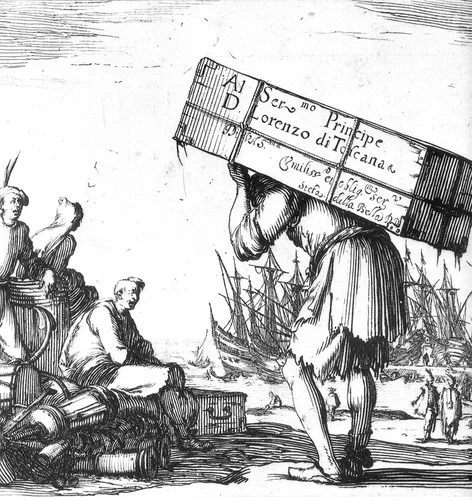

Я вот контрабанды накупила и боюсь нести домой, чтобы не попасться с нею кому не следует...
Лесков. Островитяне.
Как каторжник влачит оковы за собой,
Так всюду я влачу среди моих скитаний
Весь ад моей души, весь мрак пережитой
И страх грядущего, и боль воспоминаний.
Надсон. Как каторжник.

Серьезным источником для пополнение числа гребцов на галерах являлись нарушители положений , связанных с соблюдением соляной, а позже и табачной, монополий. Монархия во Франции для пополнения доходов казны продавала соляные и табачные монополии различным группам финансистов и частных предпринимателей, которым на определенный период времени и в определенном месте предоставлялось исключительное право на производство или импорт и продажу этих товаров. Монополисты, которые приобретали право производить и продавать соль, имели возможность получать огромные прибыли, так как требовались большие количества этого продукта для промышленных и потребительских целей. Табак, будучи предметом роскоши, не имел такого значения, как соль, и так как он по большей части импортировался издалека, табачным монополистам было легче поддерживать свою монополию. Однако обе монополии вели к появлению сходных проблем. Организация и контроль были одинаковы для обеих этих монополий и временами одни и те же группы откупщиков контролировали продажу как соли, так и табака. Оба вида монополистов обладали широкими правами по розыску и задержанию нарушителей, и «кодекс» наказаний, которым они были вооружены (особенно по декларации от сентября 1674 года по табаку и от мая 1680 года по соляному налогу (габели - gabelle)) были во многих отношениях схожи и в равной степени жестоки. (Marion, Marcel. Dictionnaire des institutions francaises au XVIIe et XVIIIe siecles. 2nd ed. Paris: Editions Picard, 1968, 247- 250 (соль и gabelle), 524-525 (табак).)
Наибольшим злом этой системы налоговый и финансовых притеснений были жадность и жестокость самих монополистов. В осуществлении своих привилегий они не испытывали никакой жалости к потребителям и не проявляли милости к лицам, которые нарушали их монополии. Они направляли провинившихся – и мелких воров, и контрабандистов – в тюрьмы сотнями. На протяжении ряда лет многие тысячи контрабандистов солью были направлены на галеры. В восемнадцатом веке Неккер, министр финансов, привел оценку, что дела против контрабандистов соли приводили ежегодно к 2300 арестам, к конфискации 1100 лошадей и 50 повозок, и к 300 осуждениям на галеры. Марион уверяет, что ближе к закату старого режима между буквой закона и его исполнением была «дистанция огромного размера». (Marion, Dictionnaire des institutions, 250). Но во времена Людовика XIV не было оснований считать, что у соляных монополистов имелись какие-либо затруднения в отправке нарушителей на галеры.
Среди людей, которые были осуждены на галеры, находились инвалиды, а также другие лица, неспособные работать на веслах. Будучи бесполезными как активные гребцы, такие осужденные просто заковывались в цепи в плавучих тюрьмах, где содержались другие списанные с галер старые, больные люди и инвалиды, а также те, кому не хватило места в переполненных госпиталях. Практикой военного флота предусматривалась выдача пайка и один су в день каждому из этих бедолаг, кроме контрабандистов. Морские чиновники говорили, что их должны были кормить сами соляные и табачные монополисты. Военный флот кормил трудоспособных людей, прибывающих в Марсель, пока они могли работать на веслах, но передавал эту миссию монополистам, когда каторжники не представляли больше ценности на галерах короля.
Можно без труда догадаться, что в осуществлении этой обязанности соляные и табачные откупщики не проявляли рвения. Невыплаты за пайки инвалидов были зачастую преднамеренны, хотя иногда это являлось простой халатностью или недосмотром части местных агентов. Но каковы бы ни были причины, подобные невыплаты имели место на обоих концах этой цепочки: в тюрьмах, в которых каторжники содержались в ожидании прихода этапа, направлявшегося в Марсель, и в плавучих тюрьмах, где содержались инвалиды. В 1678 г., например, три контрабандиста соли были помещены в тюрьмы Мулена и Буржа, ожидая отправки на галеры, один из них был парализован и двое других, 60 и 73 лет, не имели конечностей. Понятно, что когда сопровождающий этап на галеры закончил сбор заключенных, он оставил этих трех на месте. Они были бы бременем для него на всем пути в Марсель и бесполезны на галерах, если они туда вообще бы добрались. Морской министр был информирован об этом и в свою очередь сообщил соляным монополистам: «если необходимо для благосостояния вашей монополии держать таких людей на галерах, тогда вы должны компенсировать расходы, связанные с их отправкой, и должны также обеспечить их питание и содержание, когда они прибудут туда.» (Colbert, Jean-Baptiste. Lettres, instructions et memoires, 8 tt. Paris, 1861-82, III, pt. 2, 100. Какова бы ни была судьба этих трех человек, их случай был «типичным». Не менее 487 соляных контрабандистов-инвалидов было на балансе галерной базы в том самом году (1678).
В 1684 году интендант Суассона (Soissons) описал группу контрабандистов, ожидающих этапа на галеры (семь за нарушение соляных законов и четыре – табачных), пять из которых «были всего лишь дети от десяти до тринадцати лет. Все одиннадцать мужчин, женщин и девочек находились в некоем подобии склепа, не достигающего тринадцати квадратных футов…(так в тексте. -g_g)» Интендант приказал тюремщикам исправить эту ситуацию и следить, чтобы такое больше не повторялось. Условия были едва ли лучше в тюрьме Вервэна (Vervins), где обвиняемые в соляной контрабанде содержались «на дне сухой ямы, в которую они спускались по приставной лестнице, и куда никогда не проникал солнечный свет.» (Marion, Dictionnaire des institutions, 457.) Морской министр в послании к соляным откупщикам в 1695 г. напомнил им о состоянии людей, которых они направляли в тюрьму: «Я ранее сообщал вам, что они почти голые и нуждаются в еде. Я пишу вновь, чтобы вы могли приказать своим подчиненным давать им хлеб лучшего качества и по крайней мере один раз в день немного супа. Даже если воля короля не обязывает вас это делать, ваше милосердие обязывает вас совершить эти небольшие расходы.» (Цит. по У.Бэмфорду). Откупщики посчитали, что милосердие и стремление к извлечению выгоды суть вещи трудно совместимые. Но дух милосердия был, к счастью, жив среди некоторых из их современников. В 1716 г., например, обнаружилось, что Dames de la Charité в Дижоне направляли помощь осужденным в местную тюрьму в течение предшествующих девяти лет, и искали средства для продолжения своей работы. Помимо ограниченной благотворительности и каких-то средств, поступающих в тюрьму, единственным ресурсом, который имели осужденные на галеры, был один су в день, выделяемый из казны, чтобы дать им возможность выжить, пока они находятся в тюрьмах, ожидая отправки в Марсель.
Несмотря на усилия по предотвращению отправки физически неполноценных людей на галеры, много лиц, помимо соляных контрабандистов, прибывавших в Марсель, оказались непригодными для службы на веслах, факт, который злил Кольбера, потому что такие люди втягивали корону в лишние расходы. «Необходимо заботиться о том, чтобы посылаемые осужденные имели хорошее здоровье и силу для нормальной работы.» Циркуляр 1672 года по этому поводу рекомендовал, чтобы «преступники в возрасте свыше пятидесяти пяти лет не осуждались на галеры, если у них не было силы и здоровья, необходимых для службы.» Но нельзя, чтобы каторжник был и слишком молод. Одна из жалоб, вынесенная на сессию морских офицеров, касалась того факта, что в последнем этапе из Бретани находились пять мальчиков, «старшему из которых не было еще и пятнадцати лет. Они не могут выполнять на галерах никакой работы; напротив, они вовлекаются заключенными и турками в преступления, которые очень распространены на галерах. Ранее обычным делом было бы их освобождение и использование в арсенале. Но так как имеются основания опасаться, что после возвращения домой они вновь вернуться к этим плохим привычкам, решено… направить их в качестве слуг по контракту на острова [Вест-Индии].» Вообще, морские чиновники полагали, что лучше всего для службы на галерах подходят мужчины между двадцатью и тридцатью пятью годами.
Равным образом обременительны и бесполезны для галер были инвалиды и неизлечимо больные. Люди с искалеченными конечностями или совсем без руки или ноги или люди с грыжей были нежелательными на галерной базе. Только соляным и табачным монополистам обычно было разрешено направлять инвалидов на галерную базу, ожидая от них оплаты за питание этих людей. Кольбер предупреждал однако, что хотя физическое увечье являлось основанием для того, чтобы не направлять людей на галеры, оно не должно служить поводом для спасения от «более сурового» наказания – смертной казни, если преступник заслуживает того.
Добавим к сказанному несколько слов о другой категории преступников, использовавшихся на французских галерах. Это каторжники, поступавшие из других стран, от иностранных правителей, у которых было мало галер или вовсе не было собственных гребных судов. Княжество Монако (Monaco), Герцогство Лотарингия (Lorraine), некоторые другие мелкие княжества иногда практиковали использование французских галер в качестве тюрем для своих осужденных. Династия герцогов Савойи до 1680 года периодически поставляла заключенных со своей территории для службы на французских галерах, хотя герцоги иногда жаловались на отказ Галерного корпуса освобождать заключенных по истечении сроков заключения. Подобные трудности, а также общее расширение пропасти между Францией и савойской династией, привели к тому, что последняя стала неохотно использовать французские галеры. Желание поставлять гребцов едва ли крепло от таких властных посланий, каким было письмо принцу Савойскому от Сеньелэ в 1685 г., в котором министр Людовика, перенимая манеру обращения своего хозяина, заметил: «Его величество информирован, что вы имеете … значительное число [каторжников] в Вильфранше, которые недостаточно хорошо используются.» В восемнадцатом веке король Польши добивался «разрешения» послать своих каторжников на французские галеры. Использовались также семейные связи Бурбонов для организации временной передачи нескольких сотен «бесхозных» испанских галерных гребцов во Францию, после рейда английской эскадры в 1742 г., в результате которого было сожжено пять испанских галер в Сан-Тропе.